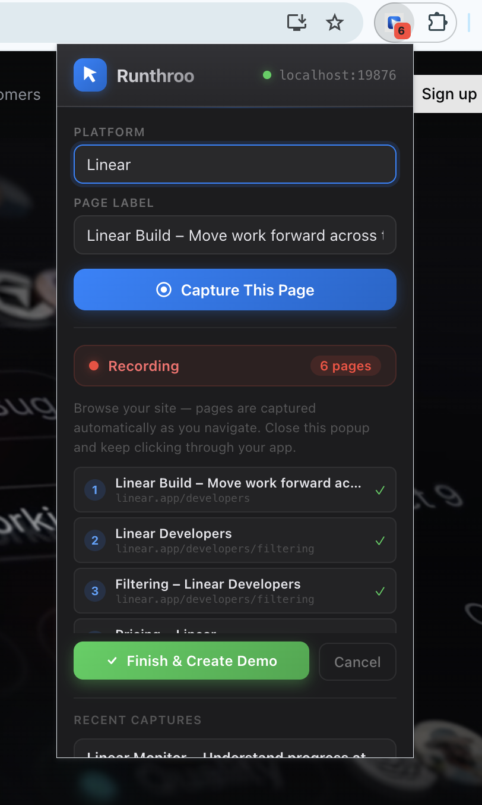
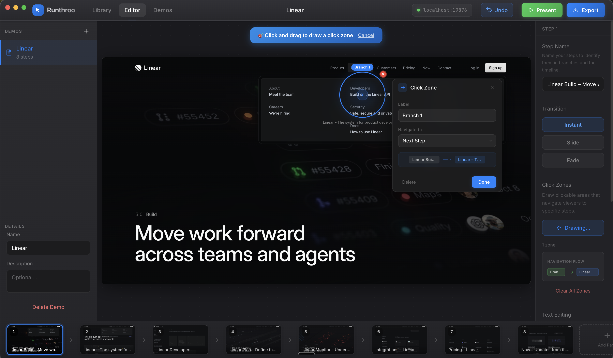
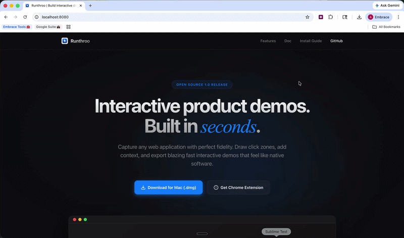

Interactive product demos.
Built in seconds.
Capture any web application with perfect fidelity. Draw click zones, add context, and export blazing fast interactive demos that feel like native software.
Blazing Fast Export
Stop recording heavy videos. Export lightweight, pure HTML/CSS presentations that load instantly and look perfectly sharp.
Smart Click Zones
Draw interactive targets over any element. Visually guide your viewers through the exact happy-path of your application.
100% Local & Secure
Your screen captures never touch a cloud server. Everything is stored and compiled strictly on your local machine.
Pixel-perfect clones in one click.
Our Chrome extension serializes the exact DOM and CSS of your application. The result isn't a video or a static image — it's a living, breathable replica of your UI.
- Zero resolution loss across screens
- Perfect font and styling retention
- Instantly captures complex dynamic apps

Edit text, blur data, and stitch flows.
Bring your captures into the native macOS application to clean them up. Redact sensitive customer information, fix typos in the UI, and link screens together with branching logic.
- Native Frosted-Glass Blur Zones
- Direct on-screen Text Editing
- Powerful logic-based Branching

Install the Extension
in 15 seconds.
To bypass the Chrome Web Store review queue, we've made the extension available natively. Just follow these quick steps:
- Download the ZIP Archive Click here to download runthroo-extension.zip and unzip it.
-
Open Extension Settings
Navigate to
chrome://extensionsin your Chrome browser. - Enable Developer Mode Toggle "Developer mode" in the top right corner.
- Load Unpacked Click "Load unpacked" and select the folder you just unzipped. You're done!
